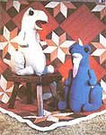
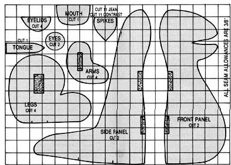
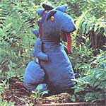

You can use old jeans, sewing scraps, and a little imagination to create...
Would you like to make a unique toy for your children or a gift for someone special? Something that will appeal to toddler or teenager ...that's inexpensive and personal ...and that will challenge your resourcefulness and creativity? If so, gather the following materials and stitch up a dinosaur!
[1] Discarded Jeans. Two pairs of adult-size denim jeans, faded about the same, so that the pieces will match when they are put together and one pair of children's jeans, brightly colored, for the mouth and spikes on the spine.
[2] Felt. A 4" X 8" piece of black for the eyes and a 1-1/2" X 6" scrap of pink or red for the tongue.
[3] Thread. A spool of blue quilting thread to use when sewing the jeans (it's stronger than the regular variety), and a spool of black for the eyes.
[4] Self-adhering fastener (such as Velcro). A 9" length of 1-1/2"-wide fastener to attach the limbs securely to the body. (Perhaps you can recycle some of this, too-say, from outgrown coats or tennis shoes.)
[5] Stuffing. Two bags of 16-ounce polyester fiberfill. Shredded foam is economical but messy. Or look around the house for such alternatives as old stockings or leftover pieces of quilt batting.
[6] 1/8" foam . This is to make the spikes stand up along the spine. (Sometimes this foam is used as packing material.) As an alternative, you can use some of whatever material you're using for stuffing.
Rule a 2" grid on a large piece of wrapping or graph paper. Then, using the diagram provided here, carefully copy the design-one square at a time-onto the paper to produce a full-size pattern.
[1] Prepare the denim material by cutting the jeans open at the inseam and spreading them flat, with right sides together. Lay out the pattern pieces to make best use of the denim, and cut out a total of two front panels, two side panels, four legs, four arms, and eleven spikes.
[2] Cut the Velcro into three 3" strips, and then cut one of the strips in half to be used on the arms.
[3] Cut two eyes and one tongue from the pieces of felt.
[4] From the child's jeans, cut the mouth (on the fold) and eleven spikes.
[5] Cut eleven spikes and two eyelids from the foam.
[1] Spikes . Form the spikes by placing one piece of denim and one piece of colored cloth with their right sides together, then adding a piece of foam. With the foam on the bottom, stitch the two curved sides, clip the curves, and turn right side out. Make eleven of these.
[2] Eyelids . Place the right sides of the denim together with the foam on the bottom side. Stitch around the circle, clip the curves, and turn right side out.
[3] Eyes . Baste around the eyes, gather by pulling the threads, and stuff.
[4] Body . With right sides together, sew one of the front panels to one of the side panels. Stitch the Velcro in place as indicated on the pattern. Repeat for the other side.
[5] Spine and front seam . Alternating blue denim with contrasting fabric, pin spikes along the spine, pointing down. Pin the two front/side pieces, right sides together, around the whole body. Stitch, leaving the mouth and bottom areas open.
[6] Tongue and mouth . Attach the tongue to the mouth. Pin the mouth in the open area on the face, right sides together, and stitch. Clip curves. Turn the entire body right side out.
[7] Arms and legs . Sew the Velcro strips on the arms and legs as shown on the pattern. Place the right sides together and stitch. Turn them right side out.
[8] Stuffing . Stuff the arms, legs, and body.
[9] Handwork . Close all open seams. Attach the arms and legs to the body with the Velcro, then tack around each limb to conceal the fastener. Turn the raw edges of the eyelids under and sew them to the face, then stitch the eyes in place under the eyelids, again turning under the raw edges.
Now, who said dinosaurs are extinct?
One of MOTHER's staffers decided to whip up her own version of Jody Wright's "Deno, "using materials she had at home. She discovered she had only one pair of usable jeans and-since they were women's size nine-they would certainly not provide enough fabric for this project. So, she dug around in the scrap bag and came up with a remnant of duck-type cloth that would blend with the denim and serve as a contrast.
By laying out the pattern carefully, the enterprising seamstress managed to cut two front panels, two legs, two arms, the eyelids, and eleven spikes out of the jeans. She then cut the back panels, mouth, two more legs and arms (to be used next to the body), and the eleven contrasting spikes from the other material.
A piece of red-and-white-striped fabric formed the tongue (there was no felt in the house), and two large brass buttons added eye interest. (She had planned to embroider the eyes-and would have done so if giving the animal to a small child-but since her teenaged daughter had already claimed the dinosaur for her menagerie, the buttons were a safe enough solution.)
Bit s of leftover Velcro were used to attach the arms and legs. (Though this make-do approach worked, using the larger strips suggested by the author would definitely be easier.)
The only stuffing on hand was a one-pound bag of shredded foam, so this was used for the body, limbs, and spikes. Admittedly, fiberfill and 1/8" foam would be less messy, but the effect was quite satisfactory. In fact, our designer decided she liked the stuffed spikes better than those shaped with the 1/8" foam, even though hers were probably more trouble to make.
Bringing Deno to life was a fun project, the staff er concluded, but one that took more time than she'd bargained for (about six hours all told). Then again, the hours invested seemed a small enough sacrifice for creating a companion far a lucky young person!
|
|
 |
 |
|
 |
|
|